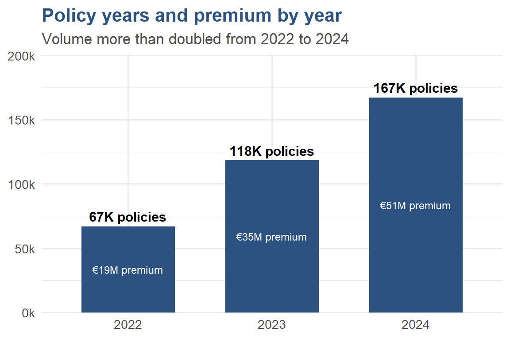
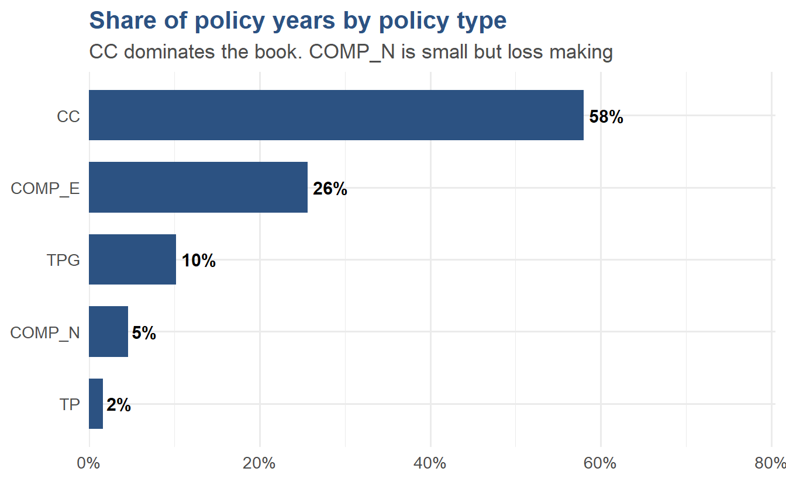
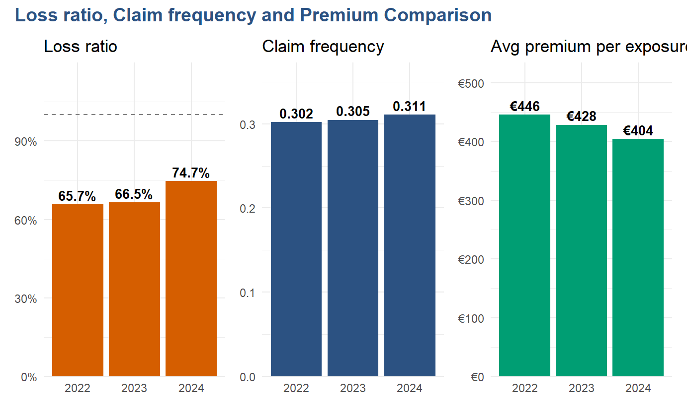
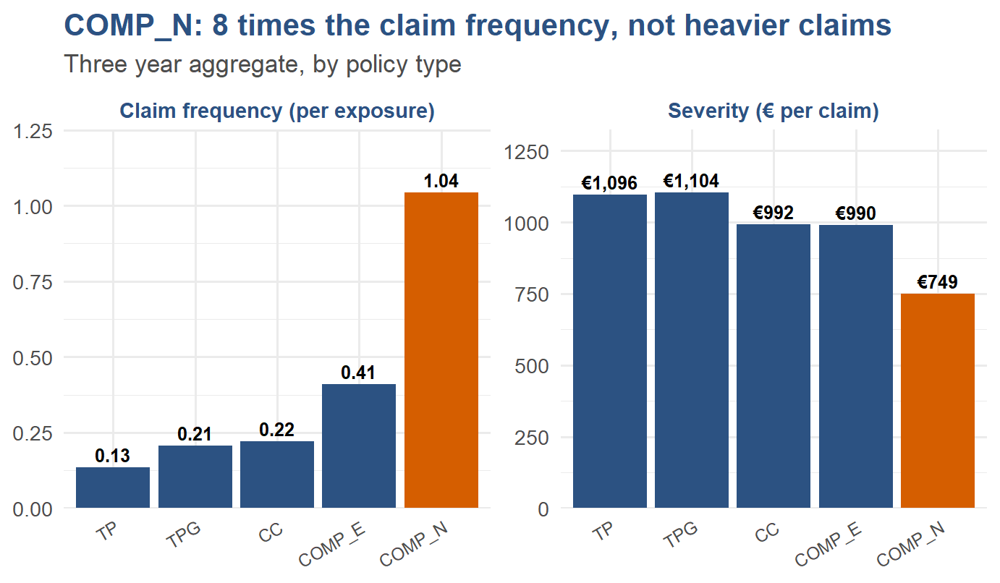
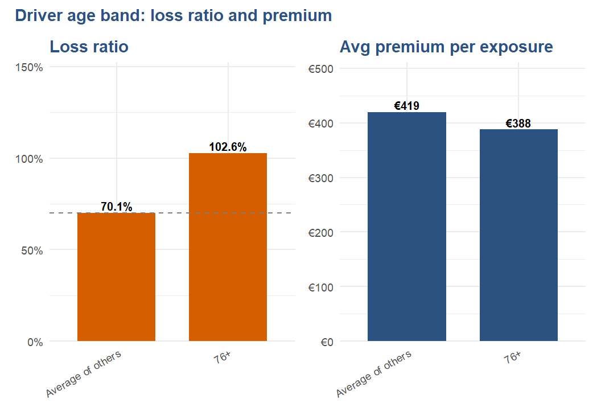
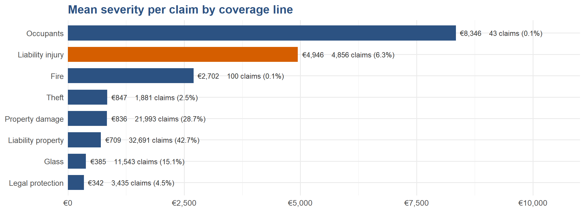
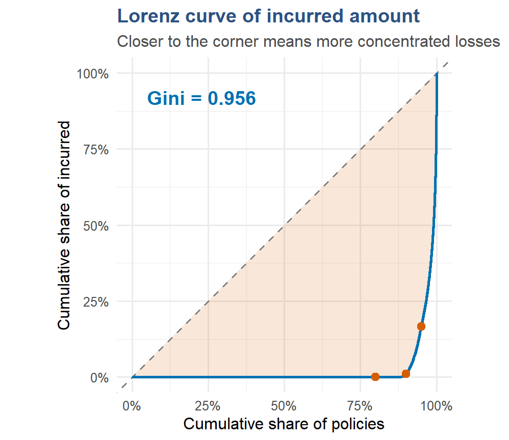
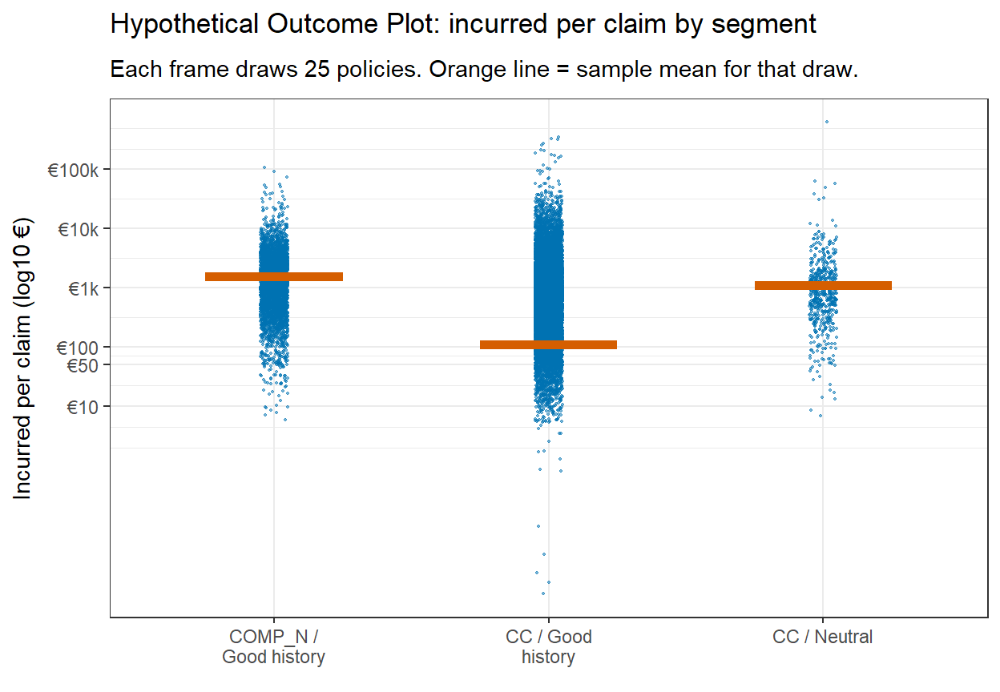

Executive Summary: Profitability and Volatility, 2022 to 2024
2026-05-23
Spanish Motor Insurance Portfolio
Executive Summary
Profitability and volatility, 2022 to 2024
ISSS608 Visual Analytics and Applications
Section 1. Setting the scene
Section 2. A profitability problem
Section 3. A different kind of risk
Conclusion
The data
licence_tenure, age_band, value_quintileTwo questions

The book is large and growing fast, doubling in volume from 2022 to 2024. The two analytical questions that follow are where profitability is falling and where volatility sits.

What dominates the book
Composition is broadly stable year on year. This means the loss ratio movement examined next is a behavioural and pricing story inside the existing book, not a mix shift story.

Why loss ratio increased
Claim cost held steady while pricing softened, naturally causing the loss ratio to increase.
Which policy to take note of
Deterioration is broad based, however COMP_N is the only product paying out more in claims than it collects in premium. The next slide diagnoses why.

Decomposing the loss ratio
Loss ratio roughly equals frequency times severity divided by premium.
The COMP_N product structure itself drives the loss. The ECDF analysis in the full report confirms the problem is a broad upward shift in mid sized claims, not catastrophic tail events.

The pricing model treats both risky history tiers and senior drivers as cheaper than what the data suggests. Bad history climbed from 53 percent to 93 percent in two years. The neutral tier overshot bad history in 2024 at 102 percent. Drivers aged 76 plus run at 102 percent while paying below average premium.
The loading structure across all three bonus tiers and the 76 plus age band needs review against recent claims data.

Figure 8
Bodily injury averages approximately €4,940 per claim, which is roughly 4 times the next largest category. Although bodily injury represents only 9 percent of claims by count, its severity drives a disproportionate share of the liability loss.
The bodily injury sub tariff must track medical and legal inflation indicators independently.

Gini = 0.96
A handful of policies drive virtually all of the loss.
| Slice | Share of total loss |
|---|---|
| Bottom 80% of policies | < 5% |
| Top 5% of policies | > 80% |
| Top 1% of policies | ~ 50% |
Reinsurance must be calibrated against the tail of the distribution, not the mean. A uniform rate increase would penalise the 80 percent of policies that contribute under 5 percent of losses while under loading the 1 percent driving half of them. Targeting is key.

The volatility paradox
Three segments are compared on incurred per claim (log scale).
Profitability and volatility are different problems demanding different tools. Pricing and excess design address profitability. Reinsurance and capital reserves address volatility. The CC and TPG segments warrant a reinsurance review against actual tail risk, separate from any pricing action on COMP_N.
The largest red tiles are CC neutral at 87 percent and the entire COMP_N block. Good history CC, which is the workhorse of the book, is the only large tile in blue. A rate correction touching only the bad history loading would miss most of the premium actually at risk. The neutral tier and COMP_N product structure both warrant equal attention.
1. Liability and property damage first. These two coverage lines together hold two thirds of premium and both run above the 70 percent threshold. Any pricing review starts here.
2. Bodily injury sub tariff. Roughly 9 percent of claims by count but structurally 4 times the cost. Index against medical and legal inflation independently.
3. Restructure COMP_N. Reintroduce a customer excess or load the product by approximately 30 percent. This is the only product breaching break even.
4. Recalibrate bonus loading at the cell level. The neutral tier overshot bad history in 2024. Review by product crossed with tier, not by tier alone.
5. Reinsurance against tail concentration. Gini 0.96, top 1 percent of policies drive half of losses, CC neutral CV 18.6. Calibrate cover against the tail, not the mean.
What this avoids
A uniform rate increase would do three things:
Targeting is key.
Questions?
Full report and code at ISSS608 Take home Exercise 1 ← Technical Report